Naturalne podłoże z młodego węgla brunatnego i włókna kokosowego, które aktywnie współtworzy środowisko wzrostu korzeni. Do upraw hydroponicznych i kontenerowych pod osłonami, sprzedaż od palety w górę.
Azot, potas i fosfor wg analizy świeżego podłoża (mg/dm³, Laboratorium WZO Pleszew 2022) – pełne zestawienie w sekcji Analiza podłoża. Substancje humusowe i materia organiczna dotyczą lignitu, który stanowi 80% składu maty – wg naszych opracowań i badań SGGW; oznaczenia dla gotowej maty w uzupełnieniu. Zalecana temperatura i EC wg naszej rekomendacji technicznej.
W skrócie
Nasza mata to nie jednosezonowy podkład, to inwestycja na lata.
01
Minimum 5 sezonów użytkowania
Matę projektujemy na co najmniej 5 sezonów uprawy – bez straty w plonie i bez oznak chorób odglebowych. Część producentów prowadzi uprawę dłużej.
Po zakończeniu kilkuletniego cyklu uprawowego mata Carbomat nie staje się odpadem – zyskuje drugie życie jako wartościowy materiał poprawiający właściwości gleby.
03
100% organiczne i naturalne pochodzenie
Podłoże Carbomat bazuje wyłącznie na naturalnych składnikach, wykorzystując potencjał polskich złóż węgla brunatnego. To rozwiązanie łączące lokalne zasoby z nowoczesną technologią profesjonalnych upraw.
04
Stabilne i przewidywalne warunki dla korzeni
Porowata struktura węgla brunatnego oraz jego wysoka pojemność sorpcyjna pomagają utrzymać optymalne proporcje wody, powietrza, temperatury i składników mineralnych w strefie korzeniowej.
05
Bardzo niski ślad węglowy
Analiza LCA wykazała, że całkowity ślad węglowy mat Carbomat jest wielokrotnie niższy niż w przypadku wełny mineralnej.
Większość podłoży bezglebowych jest chemicznie obojętna – utrzymuje korzenie, a składniki pokarmowe dostarcza dopiero pożywka. Mata Carbomat dzięki naturalnemu lignitowi tworzy aktywne biologicznie środowisko wzrostu.
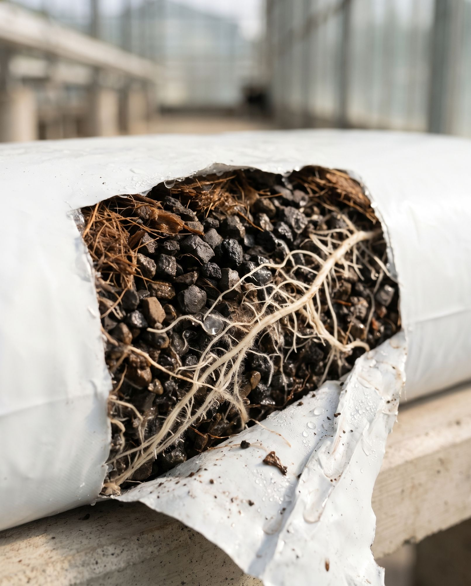
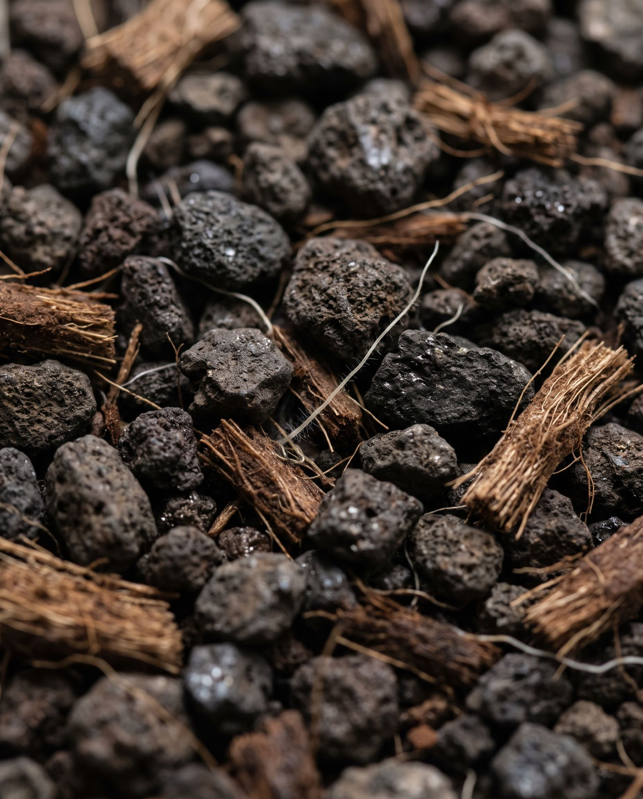
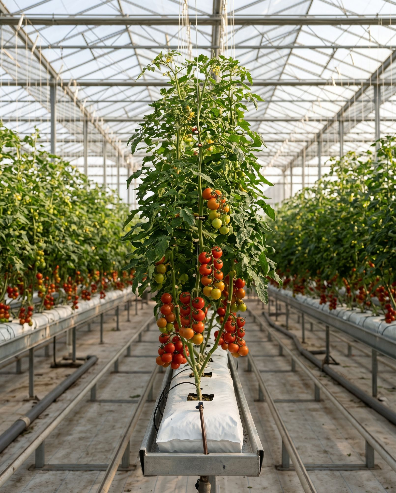
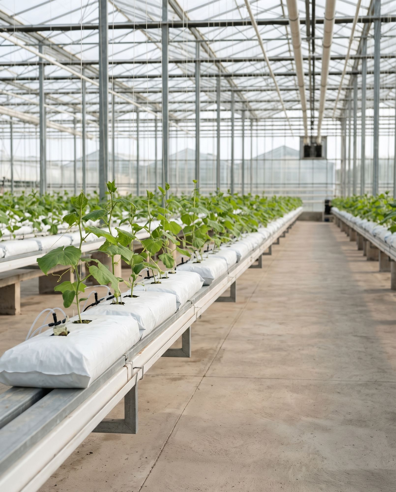
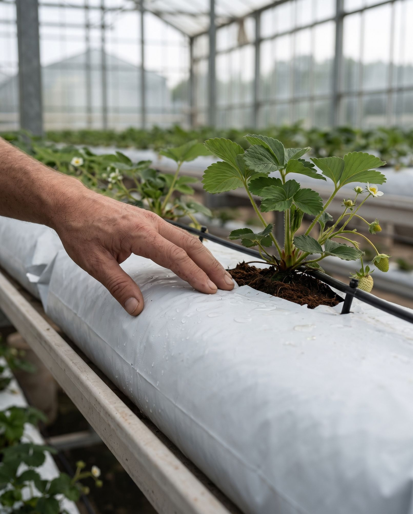
Optymalny balans wody i powietrza
Odpowiednio dobrane uziarnienie lignitu i jego wysoka zdolność sorpcji zapewniają korzystne proporcje wody, powietrza i składników pokarmowych w strefie korzeniowej. Korzenie mają dzięki temu stały dostęp do tlenu, wilgoci i minerałów, co sprzyja ich rozwojowi oraz stabilnemu wzrostowi i owocowaniu roślin.
1
1 · Woda i powietrze
Schemat poglądowy – uziarnienie lignitu i sorpcja regulują proporcje wody i powietrza wokół korzeni.
Bogactwo naturalnych substancji aktywnych
Carbomat zawiera naturalną materię organiczną bogatą w kwasy humusowe i huminowe, węgiel organiczny, mikroelementy oraz bioaktywne związki organiczne. Substancje te wspierają odżywianie roślin, poprawiają warunki w strefie korzeniowej i tworzą korzystne środowisko dla zbilansowanej mikroflory wokół korzeni.
2
2 · Substancje aktywne
30–40%frakcji humusowych (kwasy humusowe i huminowe) w suchej masie lignitu – a lignit to 80% składu maty
węgiel organiczny, mikroelementy i związki bioaktywne
środowisko dla zbilansowanej mikroflory wokół korzeni
Udział frakcji humusowych w lignicie – wg naszych opracowań i badań SGGW, zależny od partii surowca. Oznaczenia dla gotowej maty w uzupełnieniu.
Maksymalizacja potencjału roślin przy mniejszych nakładach
Carbomat pomaga stworzyć stabilne środowisko dla korzeni, w którym woda i składniki pokarmowe są lepiej magazynowane i wykorzystywane przez roślinę. Efektem jest bardziej efektywne odżywianie, potencjalnie wyższe plony o lepszych parametrach jakościowych oraz możliwość optymalizacji kosztów nawożenia.
3
3 · Efektywność
Schemat poglądowy – sorpcja lignitu magazynuje wodę i składniki, zamiast oddawać je do drenażu.
Czystość i bezpieczeństwo dla roślin przez wiele sezonów
Dzięki naturalnemu pochodzeniu i stabilnej strukturze Carbomat tworzy bezpieczne, przewidywalne środowisko dla korzeni. Jest wolny od patogenów i niepożądanych zanieczyszczeń, a jego właściwości biologiczne i fizyczne pomagają utrzymać równowagę w strefie korzeniowej także w kolejnych latach.
4
4 · Czystość
Pięć sezonów uprawy na tym samym rękawie – na tyle projektujemy matę.
Podłoże, które wybacza błędy
Carbomat zachowuje przewidywalność prowadzenia uprawy – pozwala kontrolować pH i EC oraz pracować w różnych systemach nawadniania. Dzięki wysokiej pojemności sorpcyjnej działa też jak naturalny bufor, który ogranicza stres roślin przy chwilowych zaburzeniach, takich jak przegrzanie maty czy przerwa w dostawie wody.
5
5 · Bufor
Schemat poglądowy – bufor sorpcyjny ogranicza skutki chwilowych zaburzeń: przegrzania, wychłodzenia, przerw w nawadnianiu. Zalecany reżim: temperatura podłoża do 28°C, EC max 3–3,5 i stabilne.
Bogactwo naturalnych substancji aktywnych
Carbomat zawiera naturalną materię organiczną bogatą w kwasy humusowe i huminowe, węgiel organiczny, mikroelementy oraz bioaktywne związki organiczne. Substancje te wspierają procesy odżywiania roślin, poprawiają warunki w strefie korzeniowej i zwiększają efektywność wykorzystania składników pokarmowych. Tworzą również korzystne środowisko dla rozwoju zbilansowanej mikroflory wokół korzeni.
Podłoże, które wybacza błędy
Carbomat zachowuje przewidywalność prowadzenia uprawy – umożliwia kontrolę parametrów takich jak pH i EC oraz pracę w różnych systemach nawadniania i technologiach uprawowych. Jednocześnie, dzięki wysokiej pojemności sorpcyjnej, działa jak naturalny bufor ograniczający stres roślin w okresach chwilowych zaburzeń, takich jak przegrzanie lub wychłodzenie maty, przerwy w dostawie wody czy krótkotrwałe acz skokowe wahania chemiczne w strefie korzeniowej.
Dowód
Co potwierdzają badania.
Nasze podłoże jest przedmiotem niezależnych badań naukowych, które prowadzimy wspólnie m.in. z Instytutem Ogrodniczym w Skierniewicach i SGGW już od wielu lat. Zobacz, gdzie zyskujemy przewagę.
Publikacje naukowe
Badania prowadzimy m.in. z Instytutem Ogrodniczym w Skierniewicach i SGGW, a technologię sprawdzamy w warunkach komercyjnych – w uprawie pomidora, ogórka i truskawki.
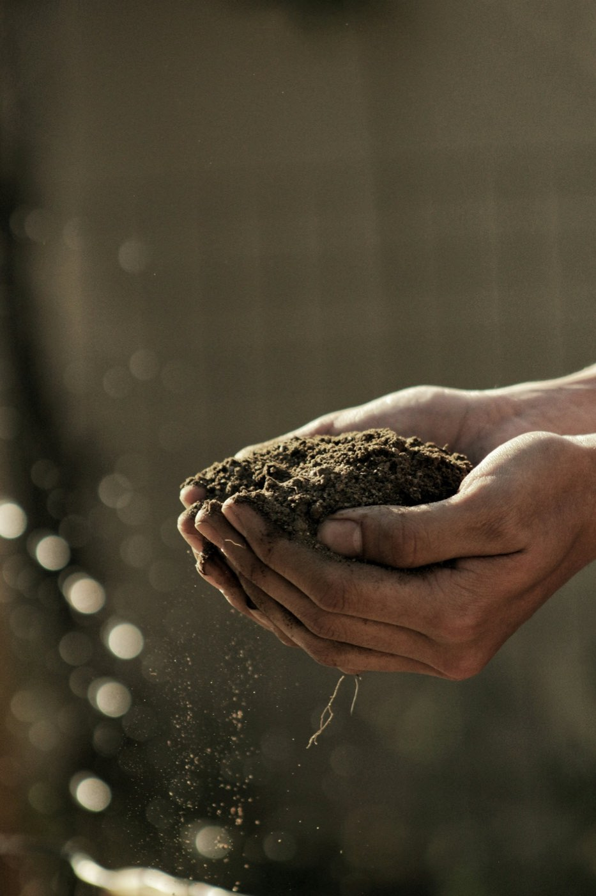
W liczbach
Sprawdzone w badaniach i w uprawie.
+40%luteiny w owocach względem wełny mineralnej – wariant o podwyższonym ECNiezależne badania SGGW (recenzowane)
+33,3%β-karotenu; chlorofil wyższy o 26–29% – wariant o podwyższonym ECNiezależne badania SGGW (recenzowane)
do 18,4×większy ślad węglowy wełny na 1 kg warzyw (3. rok)Nasze obliczenia metodą LCA (2021)
−1119,4 m³/hamniej wody niż na włóknie kokosowym w jednym cykluPróba komercyjna u producenta pomidora, trudne warunki klimatyczne (wynik neutralny w plonie)
Badania niezależne · SGGW · ogórek szklarniowy
Mata węglowa wobec wełny mineralnej
Wyższa jakość owoców – większa chrupkość i zawartość cukrów
Wyższa wartość odżywcza i niższa zawartość azotanów
Wyższy plon handlowy
Lepsze wykorzystanie składników pokarmowych
Stabilność podłoża i poprawa właściwości w czasie
Ponowne użycie mat bez straty plonu i jakości
Analiza śladu węglowego · nasze obliczenia metodą LCA
Wielokrotnie niższy ślad węglowy niż wełna mineralna
Mata Carbomat
109 kg CO₂/t
Wełna mineralna
3934 kg CO₂/t
Patent europejski EP 3 014 985
Uprawa w trudnych warunkach klimatycznych · pomidor · wobec włókna kokosowego
Mniej wody przy porównywalnym plonie
Mniejsze zużycie wody przy zachowaniu wysokiej efektywności
Wysoka efektywność wykorzystania wody
Wyższy udział owoców o jakości handlowej
Lepsze parametry smakowe
Stabilne parametry podłoża przez cały sezon
Badania niezależne · SGGW · ogórek szklarniowy
Mata węglowa wobec wełny mineralnej
01
Wyższa jakość owoców – większa chrupkość i zawartość cukrów
Badania wykazały, że ogórki uprawiane na matach Carbomat charakteryzują się lepszymi parametrami jakościowymi niż owoce z upraw prowadzonych na wełnie mineralnej.
Pomiary twardości owoców wykazały wartość 63,6 HPE dla mat węglowych wobec 56,8 HPE dla wełny mineralnej, co przekłada się na wyższą jędrność i chrupkość owoców. Jednocześnie zawartość ekstraktu ogólnego (TSS) osiągnęła 3,9 °Brix, podczas gdy w przypadku wełny mineralnej wynosiła 3,6 °Brix, wskazując na wyższą zawartość cukrów rozpuszczalnych.
02
Wyższa wartość odżywcza i niższa zawartość azotanów
Rośliny uprawiane na matach Carbomat wykazały korzystniejsze parametry jakości biologicznej owoców. W warunkach doświadczenia stwierdzono:
wzrost zawartości β-karotenu o 33,3%,
wzrost zawartości luteiny o 40% w porównaniu z uprawą na wełnie mineralnej,
chlorofil wyższy o 26–29%.
Jednocześnie owoce zawierały znacznie mniej azotanów – średnio 45,0 mg/kg, podczas gdy w owocach z upraw na wełnie mineralnej odnotowano 89,9 mg/kg. Oznacza to redukcję ich zawartości o około 50%.
03
Wyższy plon handlowy
W przeprowadzonych badaniach rośliny uprawiane na matach węglowych osiągnęły plon handlowy na poziomie 6834,2 g z rośliny, podczas gdy w przypadku wełny mineralnej było to 6190,3 g. Oznacza to wzrost plonu o ponad 640 g na każdej roślinie.
liczba owoców handlowych wyniosła średnio 32 sztuki na roślinę, wobec około 28 sztuk na wełnie mineralnej,
w warunkach stresowych rośliny uprawiane na lignicie wykazywały o 12,3% mniejsze opadanie zawiązków owoców, co ograniczało straty produkcyjne.
04
Lepsze wykorzystanie składników pokarmowych
Naturalna obecność substancji humusowych wspiera efektywne pobieranie i wykorzystanie składników pokarmowych przez rośliny.
Analizy tkanek roślinnych wykazały wyższą koncentrację kluczowych makroelementów, takich jak wapń i siarka, oraz mikroelementów, w tym żelaza, cynku i boru, w porównaniu z roślinami uprawianymi na wełnie mineralnej. Lepsze zaopatrzenie w składniki pokarmowe przekłada się na prawidłowy rozwój roślin, stabilniejszy wzrost oraz wysoką jakość plonu.
05
Stabilność podłoża i poprawa właściwości w czasie
W porównaniu z wieloma podłożami organicznymi lignit charakteryzuje się niewielkim skurczem i rozkurczem objętościowym, dzięki czemu mata zachowuje swoją strukturę i funkcjonalność przez kolejne sezony uprawowe.
Co istotne, wraz z użytkowaniem poprawiają się również wybrane właściwości wodne podłoża. W ciągu pierwszych 51 dni uprawy ilość wody łatwo dostępnej dla roślin wzrosła nawet o 55%, a gęstość nasypowa o ponad 23%, co sprzyja rozwojowi systemu korzeniowego i zwiększa stabilność warunków w strefie korzeniowej.
06
Ponowne użycie mat bez straty plonu i jakości
Ponowne użycie mat nie wpłynęło negatywnie na wzrost roślin, plon ani jakość owoców w porównaniu z uprawą na wełnie mineralnej. To wynik, na którym opieramy komunikat o minimum 5 sezonach użytkowania.
Badania niezależne SGGW (recenzowane) – Agronomy 2021, 11, 998.
Rozprawa doktorska mgr. inż. Radosława Łaźnego (Szkoła Główna Gospodarstwa Wiejskiego w Warszawie, promotor dr hab. Katarzyna Kowalczyk, prof. SGGW) i pięć publikacji recenzowanych:
Agronomy 2021, 11, 998 – ponowne użycie mat lignitowych wobec wełny mineralnej
Analiza śladu węglowego · nasze obliczenia metodą LCA
Wielokrotnie niższy ślad węglowy niż wełna mineralna
Mata Carbomat
109 kg CO₂/t
Wełna mineralna
3934 kg CO₂/t
Na 1 kg warzyw spod osłon ślad wełny mineralnej jest do 18,4× większy niż maty (3. rok uprawy). Po zakończeniu cyklu wełna jest odpadem mineralnym do utylizacji, a mata – polepszaczem gleby z wartością odsprzedaży.
Obliczenia metodą LCA zlecone przez nas (2021) – nie jest to badanie niezależne.
Patent europejski EP 3 014 985
„Podłoże do bezglebowej uprawy roślin” – rozwiązanie zgłoszone przez Carbohort wspólnie z Instytutem Odlewnictwa. Obejmuje podłoże z frakcji lignitu o uziarnieniu 1–20 mm, czyli sam mechanizm sterowania proporcją wody i powietrza w rękawie.
Partnerzy badań i wdrożeń: SGGW · Instytut Ogrodnictwa PIB w Skierniewicach · Yara · Koppert.
Uprawa w trudnych warunkach klimatycznych · pomidor · wobec włókna kokosowego
Mniej wody przy porównywalnym plonie
01
Mniejsze zużycie wody przy zachowaniu wysokiej efektywności
Badania wykazały, że uprawa pomidorów na matach Carbomat wymaga znacznie mniejszych nakładów wody niż uprawa na włóknie kokosowym. Całkowite zużycie wyniosło 7106,9 m³/ha, podczas gdy w przypadku podłoża kokosowego było to 8226,3 m³/ha.
Oznacza to oszczędność 1119,4 m³ wody na hektar, czyli ponad 1,1 miliona litrów w jednym cyklu uprawowym! To korzyść zarówno ekonomiczna, jak i środowiskowa, szczególnie w regionach narażonych na deficyt wody.
02
Wysoka efektywność wykorzystania wody
Pomimo niższego zużycia wody rośliny uprawiane na matach lignitowych utrzymały plon na poziomie zbliżonym do uzyskanego na podłożu kokosowym. Różnica w plonowaniu wyniosła zaledwie 4,8%, co świadczy o bardzo efektywnym wykorzystaniu dostępnej wody.
Wyniki sugerują, że właściwości sorpcyjne lignitu sprzyjają stabilniejszemu zaopatrzeniu roślin w wodę, ograniczając jej straty i poprawiając efektywność całego systemu uprawowego.
03
Wyższy udział owoców o jakości handlowej
Pomidory uprawiane na matach Carbomat częściej osiągały kaliber preferowany przez rynek. Udział owoców w optymalnym rozmiarze wyniósł 56,3%, podczas gdy w uprawie na włóknie kokosowym było to 53,9%.
Jednocześnie odnotowano mniejszy udział owoców niespełniających wymagań jakościowych (43,3% wobec 46,0%), co może pozytywnie wpływać na wartość handlową całego plonu.
04
Lepsze parametry smakowe
Analiza jakości owoców wykazała nieznacznie wyższą zawartość ekstraktu ogólnego (°Brix) w pomidorach uprawianych na matach węglowych. Owoce osiągnęły wartość 8,6 °Brix, podczas gdy w przypadku podłoża kokosowego było to 8,5 °Brix.
Choć różnica jest niewielka, potwierdza, że ograniczenie zużycia wody nie pogarsza jakości owoców i może sprzyjać koncentracji składników odpowiadających za ich smak.
05
Stabilne parametry podłoża przez cały sezon
Maty węglowe utrzymywały stabilne właściwości przez cały, wielomiesięczny cykl uprawowy. Zarówno pH, jak i EC pożywki oraz drenażu pozostawały na poziomach porównywalnych z podłożem kokosowym, zapewniając przewidywalne warunki prowadzenia uprawy.
Raport, zdjęcia i film z wizyty w gospodarstwieMateriały z próby prowadzonej w trudnych warunkach klimatycznych – do wglądu na życzenie.Poproś o materiały
To wynik pierwszego cyklu uprawowego w warunkach komercyjnych: plon i jakość porównywalne z kokosem przy wyraźnie mniejszym zużyciu wody. Przewaga maty kumuluje się w amortyzacji wieloletniej, a nie w pojedynczym sezonie.
1 / 3
Przygotowanie maty
Jak prawidłowo przygotować matę pod uprawę.
Każdy rodzaj mat ma swoje unikalne właściwości, ale też indywidualną instrukcję obsługi. Prawidłowe przygotowanie maty obejmuje kilka kluczowych kroków.
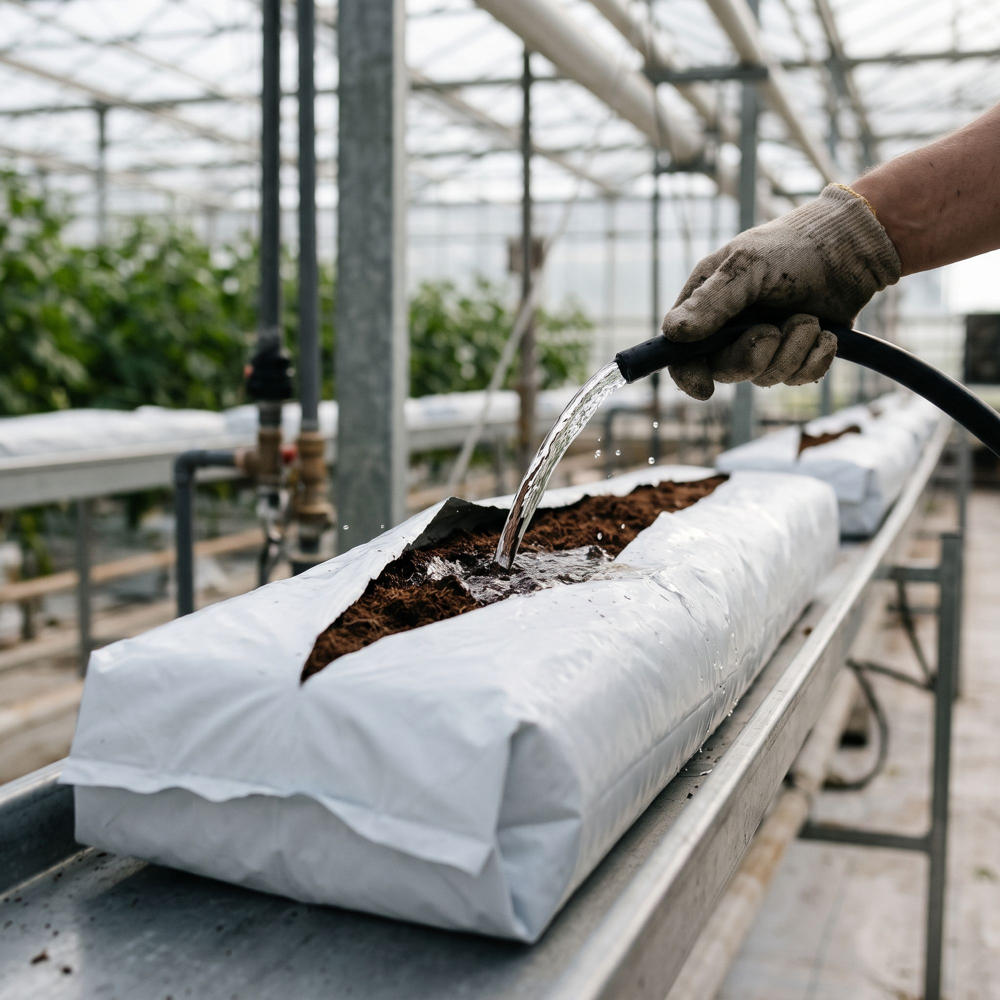
01
Zalanie
Zalej matę czystą wodą, bez nawozów i kwasów, do pełnego nasycenia, aż woda przykryje powierzchnię podłoża (około 8 dm³). Nie wykonuj wcześniej otworów drenażowych ani na nasadzenia roślin, ponieważ podłoże może wypływać wierzchem.
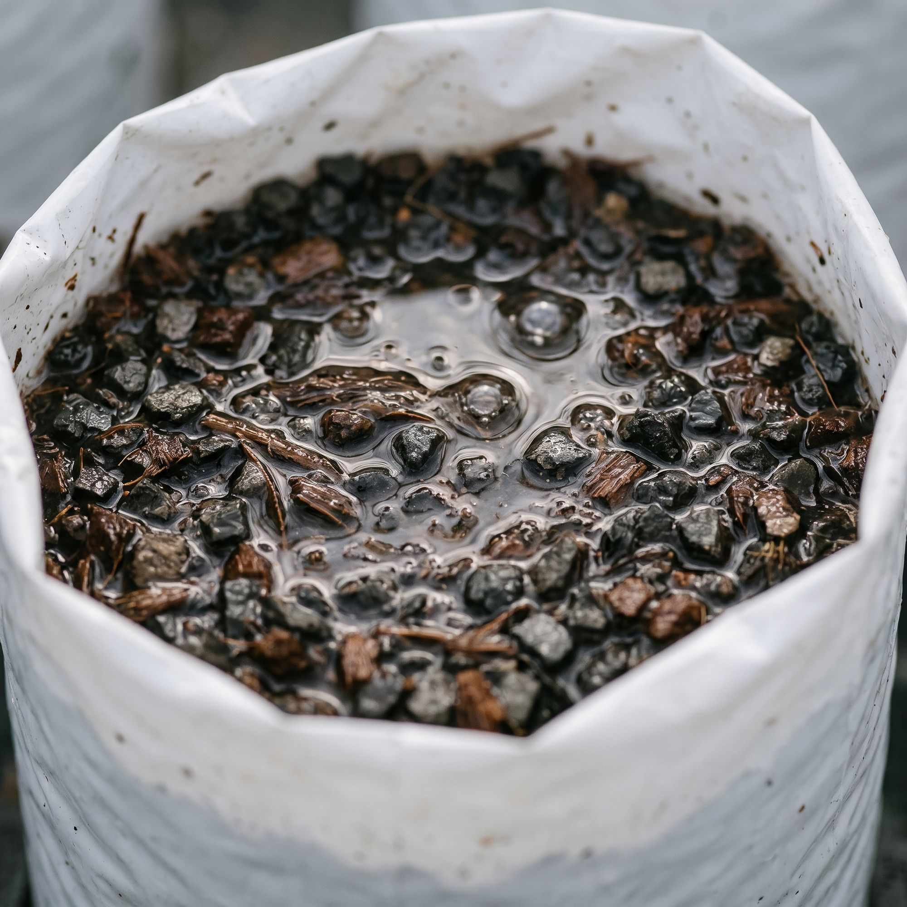
02
Moczenie 72 godziny
Pozostaw matę zalaną przez 72 godziny, uzupełniając wodę w razie potrzeby. Gruzełki lignitu nasycą się wodą, tworząc naturalny magazyn wilgoci.
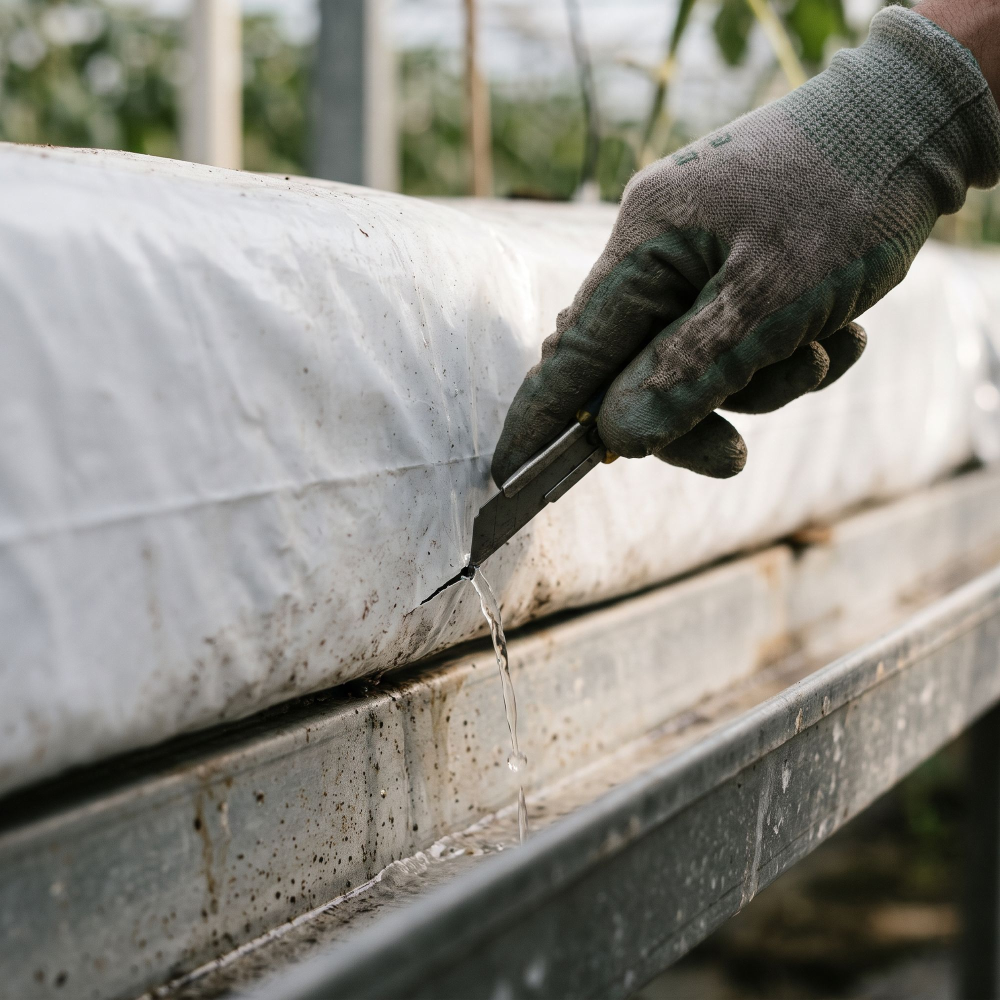
03
Wykonanie drenażu
Mata przychodzi bez otworów na rośliny i bez nacięć drenażowych. Dopiero po 72 godzinach wykonaj 2 skośne nacięcia po 2–3 cm na dłuższych bokach rękawa.
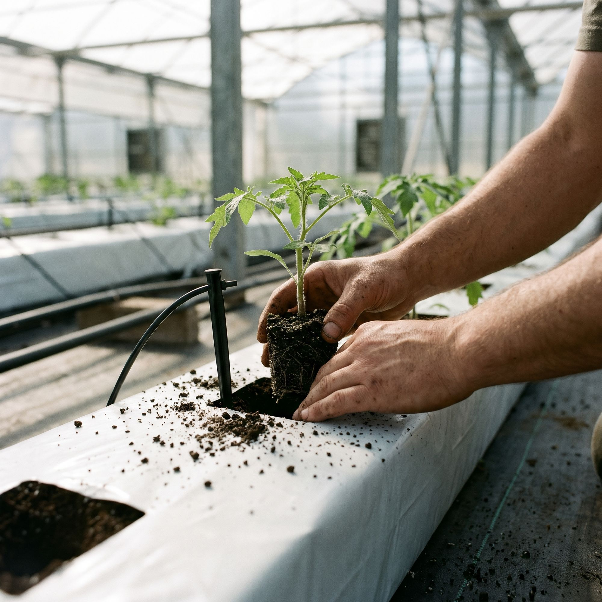
04
Sadzenie roślin
Wykonaj otwory do nasadzeń, a rośliny wsadzaj dobę po wykonaniu otworów drenażowych. Potem rozpocznij nawożenie.
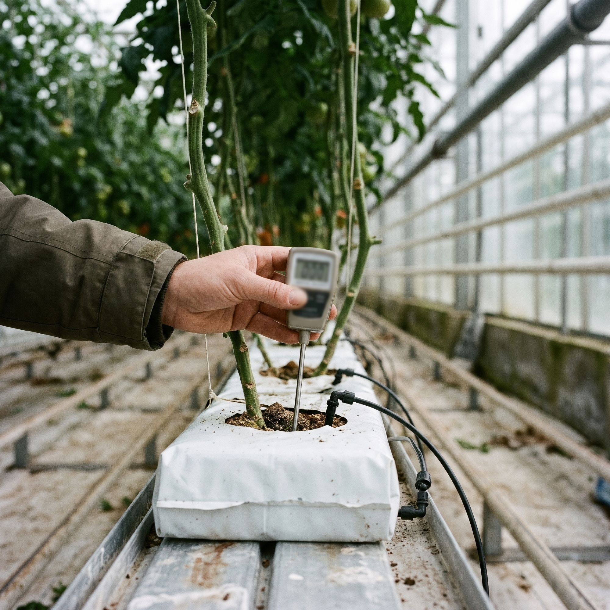
05
Wilgotność podłoża
Utrzymuj przelew 15% w fazie budowy korzeni, 25–30% później. Wilgotność 30% do 3 tygodni po sadzeniu, potem min. 50% (nie przekraczaj 60%).
Film: przygotowanie maty krok po krokuInstruktaż z kanału Carbohort na YouTube.Obejrzyj instruktaż
Pożywka? To praca dla naszego agronoma. W celu sporządzenia optymalnej pożywki dla Twojej uprawy skontaktuj się z naszym agronomem.
Analiza podłoża Carbomat w wersji bazowej i po 5 latach uprawy pomidora.
Mata pracuje w czasie: akumuluje potas i azot azotanowy, a zawartość wapnia i żelaza spada. Odczyn obniża się do około 5, przewodność (EC) pozostaje stabilna.
Wartości w mg/dm³ (pH i EC w swoich jednostkach). Analizy Laboratorium Analiz Ogrodniczych WZO w Pleszewie: podłoże bazowe (2022) i po 5 latach uprawy pomidora (2024).
Parametr
Wersja bazowa
Po 5 latach uprawy
Kierunek
Odczyn (pH)
6,42
4,98
spada
EC (mS/cm)
0,58
0,55
stabilne
Azot azotanowy (N-NO₃)
3
61
rośnie
Azot amonowy (N-NH₄)
3,2
6,9
rośnie
Fosfor (P)
107
92
spada
Potas (K)
156
495
rośnie
Wapń (Ca)
3260
580
spada
Magnez (Mg)
153
101
spada
Siarka (S-SO₄)
162
81
spada
Żelazo (Fe)
409,0
212,9
spada
Mangan (Mn)
38,8
12,1
spada
Cynk (Zn)
6,6
5,4
spada
Miedź (Cu)
0,6
0,9
rośnie
Bor (B)
2,8
1,6
spada
Chlorki (Cl)
74
36
spada
Po kilku latach uprawy możesz wykorzystać matę do:
01
Kondycjonowania gleby i terenów zielonych – nowe nasadzenia
02
Upraw doniczkowych roślin ozdobnych
03
Lub odkupimy ją od Ciebie za 1 zł
Sezon po sezonie
Nasze podłoże zarabia na siebie przez kilka lat.
Cena zakupu to tylko część kosztów. O oszczędnościach decyduje cały cykl życia podłoża.
Pierwszy rok jest tak naprawdę okresem stabilizacji maty. Program nawożenia na ten czas układa nasz agronom – to moment, w którym warto z nim pracować najbliżej.
Mata Carbomat może być użytkowana przez co najmniej 5 lat. Oznacza to jeden zakup zamiast corocznej wymiany podłoża oraz znacznie niższe koszty transportu.
Ponowne użycie mat bez straty plonu i jakości potwierdziły niezależne badania SGGW – szczegóły w sekcji Dowód.
Przygotowanie i rozłożenie mat wykonujesz tylko raz. Nie ma potrzeby corocznego usuwania zużytego podłoża, rozładunku nowych mat, ich przygotowywania i ponownego montażu. To mniej godzin pracy i niższe koszty obsługi gospodarstwa.
Po jednorazowym przygotowaniu mata wykorzystuje naturalne właściwości sorpcyjne lignitu do magazynowania wody i składników pokarmowych. Dzięki temu możliwe jest ograniczenie zużycia wody oraz bardziej efektywne wykorzystanie nawozów mineralnych.
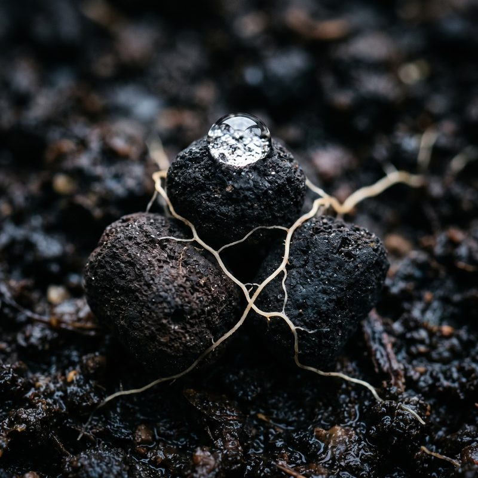
Naturalne właściwości lignitu sprzyjają utrzymaniu stabilnego środowiska biologicznego w strefie korzeniowej. Dzięki temu nie ma konieczności dezynfekowania mat pomiędzy kolejnymi cyklami uprawowymi, co pozwala ograniczyć koszty.
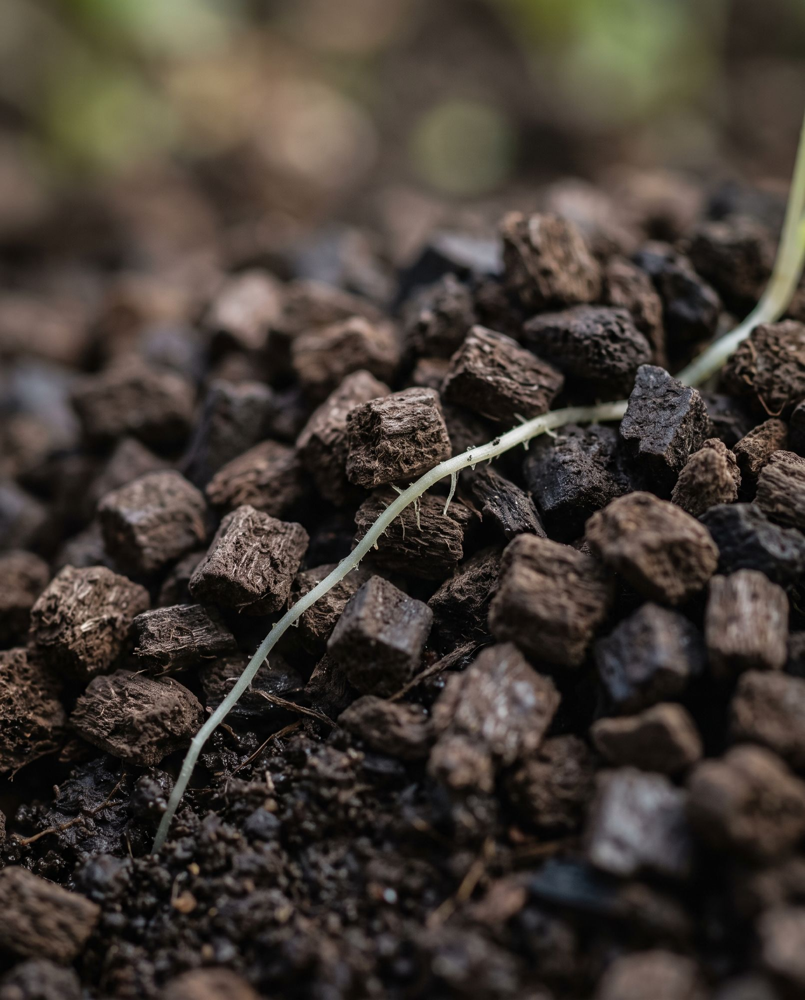
Po zakończeniu użytkowania mata nie staje się odpadem. Podłoże może zostać wykorzystane jako kondycjoner gleby lub podłoży – tak samo jak sypki CARBOMAT ECO, który jest tym samym surowcem w wersji doglebowej – albo odsprzedane producentom rolnym, szkółkom roślin ozdobnych, firmom zakładającym tereny zieleni, sadownikom czy bezpośrednio nam.
Mata Carbomat powstała do upraw hydroponicznych i kontenerowych w szklarniach i tunelach, ale to samo podłoże sprawdza się też w doniczkach, np. przy malinach. Zamówienia realizujemy od palety w górę.
Mata Carbomat jest przeznaczona do profesjonalnej uprawy hydroponicznej i kontenerowej w szklarniach oraz tunelach, ale sprawdza się również w uprawach doniczkowych, np. malin. Pamiętaj jednak, że zamówienia realizujemy od palety w górę – do ogrodu zwykle lepszym wyborem będzie sypki Carbomat Eco, czyli ten sam surowiec w wersji doglebowej.
Odpowiedź uzupełnimy – zbieramy dane z gospodarstw. To, co komunikujemy dziś: matę projektujemy na minimum 5 sezonów uprawy, a część producentów prowadzi ją dłużej. Technologię mamy potwierdzoną dla pomidora, ogórka i truskawki. Po szczegóły dla konkretnej uprawy napisz do nas – odpowie agronom.
Tak. W celu sporządzenia optymalnej pożywki dla Twojej uprawy kontaktujesz się z naszym agronomem – to on układa recepturę i prowadzi Cię przez pierwszy rok, czyli okres stabilizacji maty. Umów rozmowę albo zapytaj wirtualnego doradcę na dole ekranu.
Rozważasz przejście na matę Carbomat?
Zamówienia na maty Carbomat realizujemy od palety w górę. Napisz, co uprawiasz i w jakiej technologii – przygotujemy wycenę i zalecenia dla Twojego obiektu.
Dr inż. Radosław Łaźny
Naukowiec, praktyk i doradca w uprawach hydroponicznych